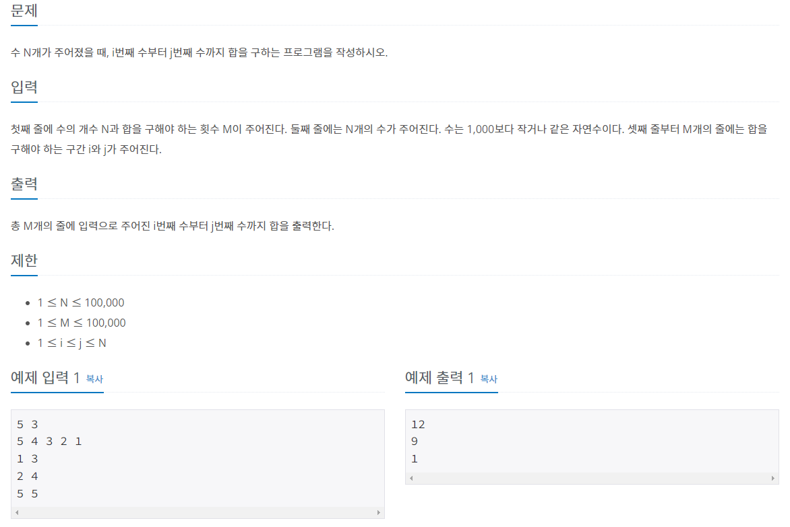
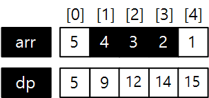

#INFO
난이도 : SILVER3
알고리즘 유형 : 다이나믹 프로그래밍(DP)
출처 : 11659번: 구간 합 구하기 4 (acmicpc.net)

#SOLVE
작은문제의 답으로 부터 큰 문제의 답을 도출하는 다이나믹 프로그래밍(DP) 알고리즘으로 풀이했다.
arr[] = 원소를 저장할 배열
dp[] = arr[i] 까지의 합을 저장할 배열
이때 dp[0]의 값은 arr[i]의 값과 동일하니 미리 초기화해 두고, dp[i] = dp[i-1] + arr[i] 라는 점화식을 세워 dp[] 배열을 초기화한다.

int arr[100001] = {0,};
int dp[100001] = {0,};
for (int i = 0 ; i < N ; i++) {
cin >> arr[i];
}
dp[0] = arr[0];
for (int i = 1 ; i <= M ; i++) {
dp[i] = dp[i-1] + arr[i];
}
만약 (1,3) 사이의 값을 구하고 싶다면 dp[3] 에서 dp[1]을 빼주고 arr[1]의 값을 더해주면 된다.
따라서 이를 점화식으로 나타내면 sum(i, j) = dp[i] - dp[j] + arr[i] 와 같이 표현할 수 있다.

int i,j;
for (int k = 0 ; k < M ; k++) {
cin >> i >> j;
cout << dp[j - 1] - dp[i - 1] + arr[i - 1] << endl;
}
#include <iostream>
using namespace std;
int arr[100001] = {0,};
int dp[100001] = {0,};
int main() {
ios::sync_with_stdio(false);
cin.tie(0); cout.tie(0);
int N, M;
cin >> N >> M;
for (int i = 0 ; i < N ; i++) {
cin >> arr[i];
}
dp[0] = arr[0];
for (int i = 1 ; i <= M ; i++) {
dp[i] = dp[i-1] + arr[i];
}
int i,j;
for (int k = 0 ; k < M ; k++) {
cin >> i >> j;
cout << dp[j - 1] - dp[i - 1] + arr[i - 1] << '\n';
}
return 0;
}